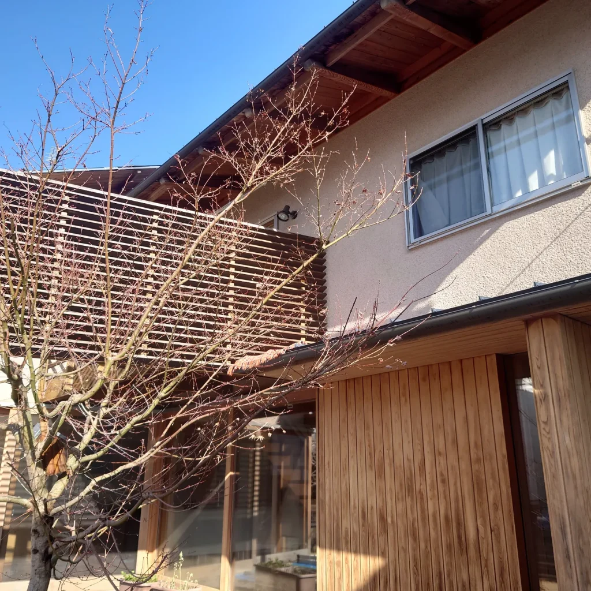
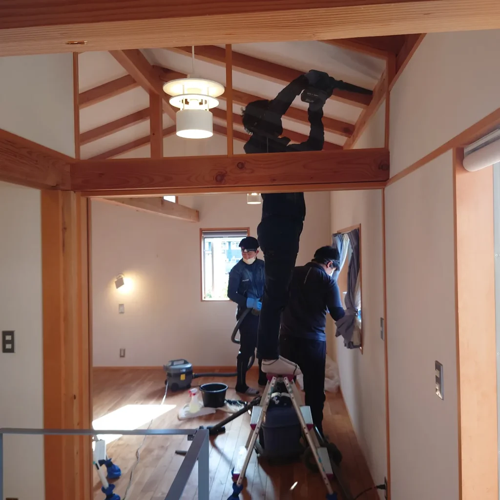
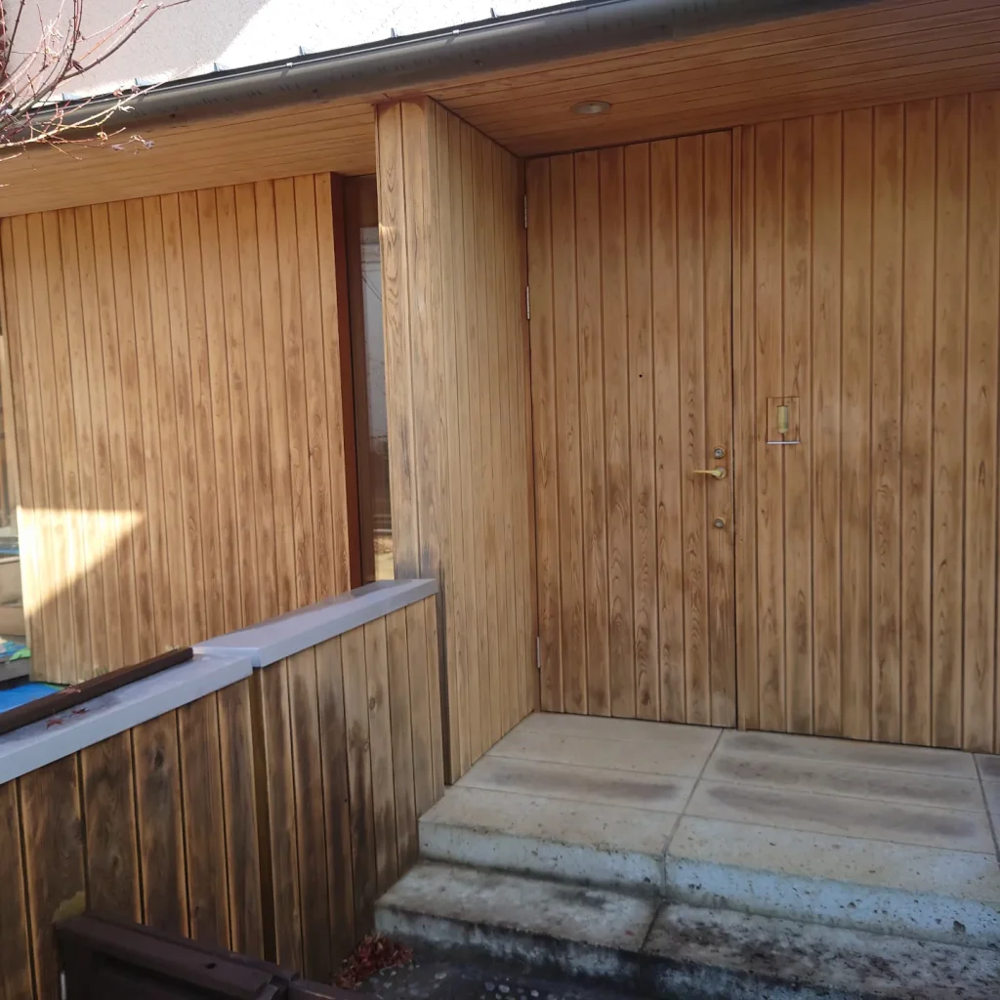
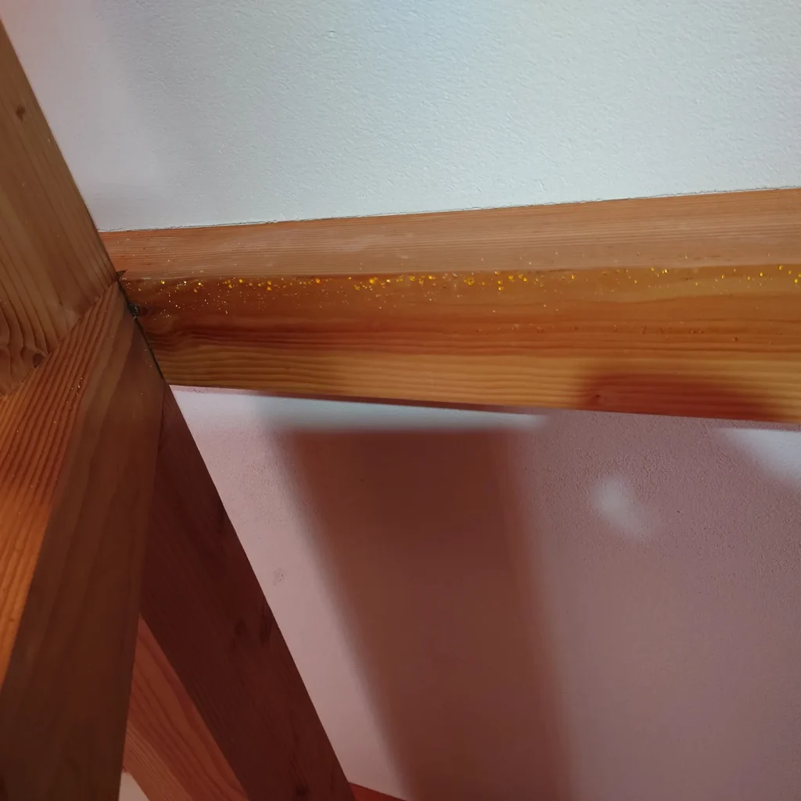
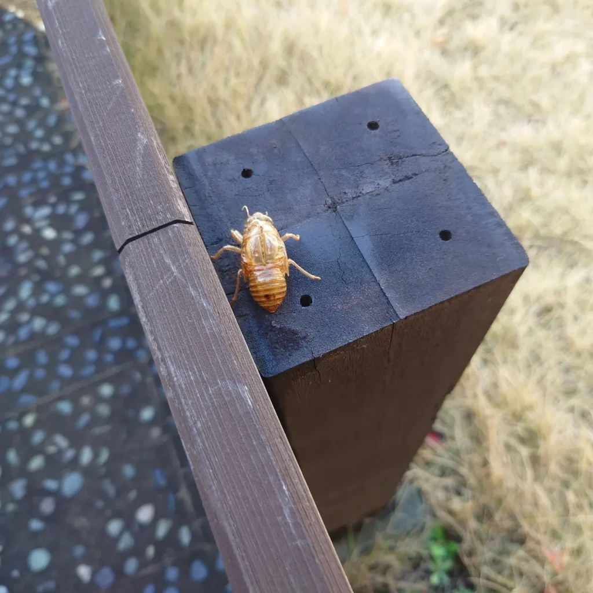
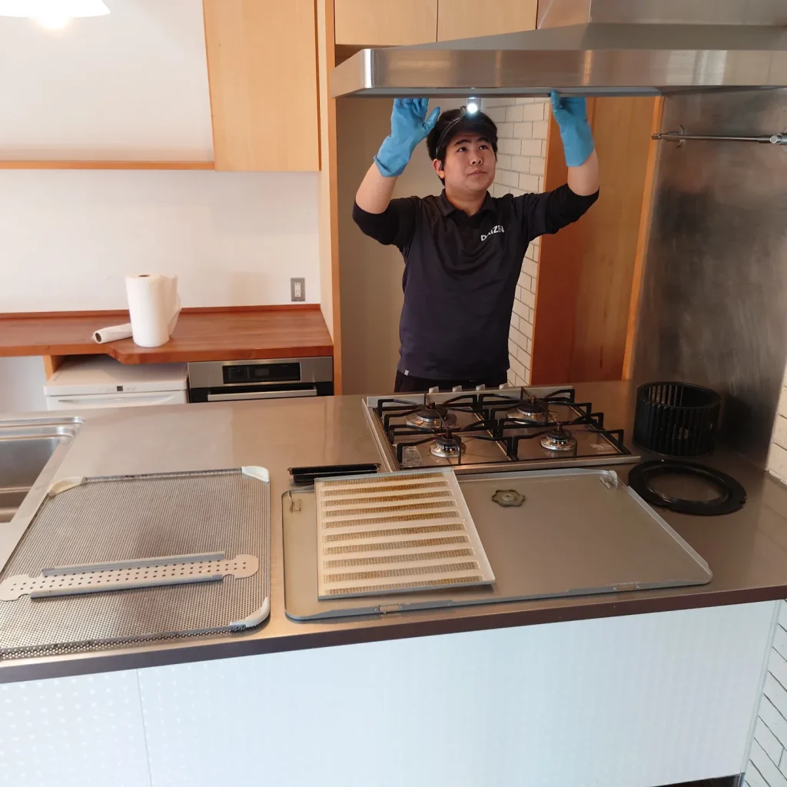
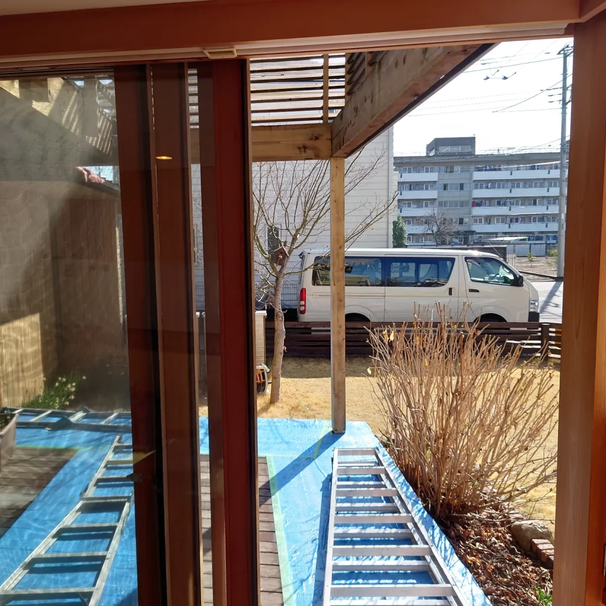
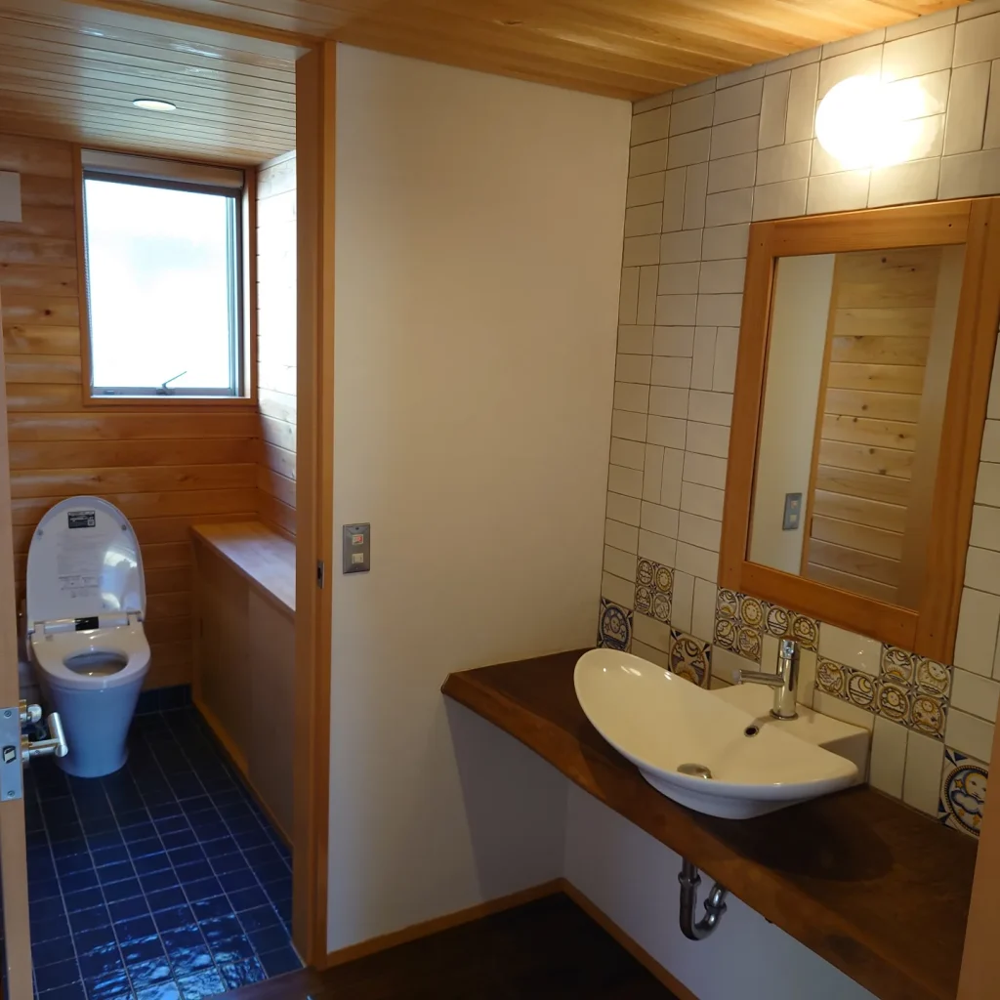
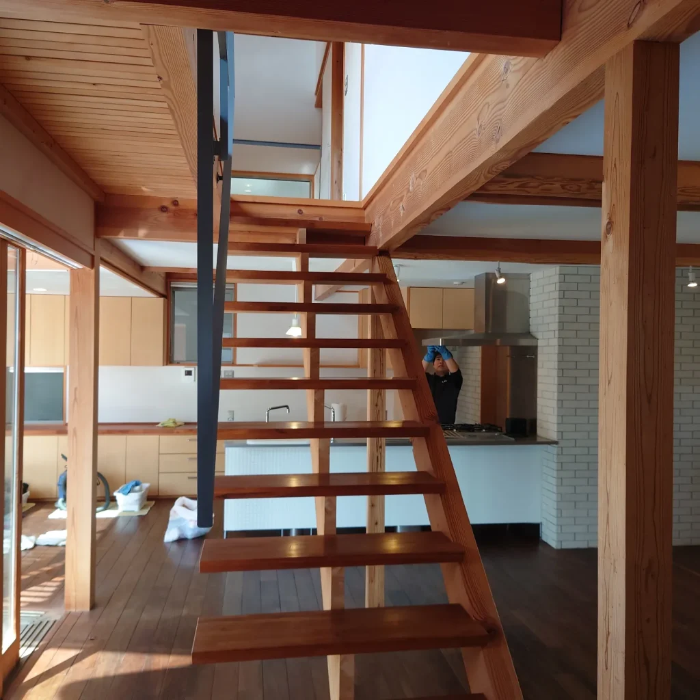

小金井市 すべて天然木で出来た「木の家」シリーズをクリーニングしています。
天然木で出来た「木の家シリーズ」大変素晴らしい美しさで毎回見るたび惚れ惚れしてしまいます。
Produceするのは菅村建築設計事務所の菅村アーキテクト。菅村さんは学生時代は海洋学のエキスパートで、サーフィン部の私の後輩でもあります。ツールドおきなわに出場するアスリートでもあり、海洋学卒業後に一級建築士を取得してこの素晴らしい「木の家シリーズ」を世にリリースしています。
この無垢材に魅せられた多くのユーザーさんがいらっしゃいます。私どももこの無垢材の美しい住宅を磨き上げる快感に魅せられております!
無垢材なので、一切ワックスは使いません。水拭き磨き上げで無垢材本来の物凄く美しい輝きが現れます。
天井の梁の無垢材にはびっしりと金色に輝く「樹液の金色の粒」が見て取れます。
菅村さん曰く「木はいつまでも生きている」そうです。
素晴らしいですね!
工事中ページ
菅村建築設計事務所








